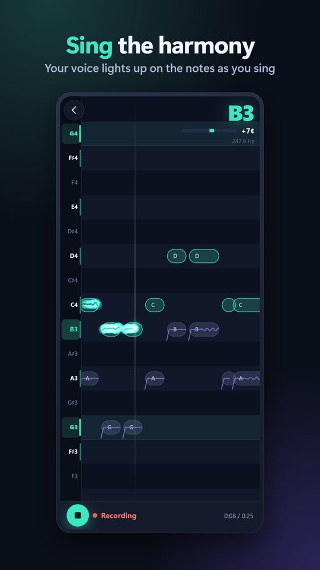
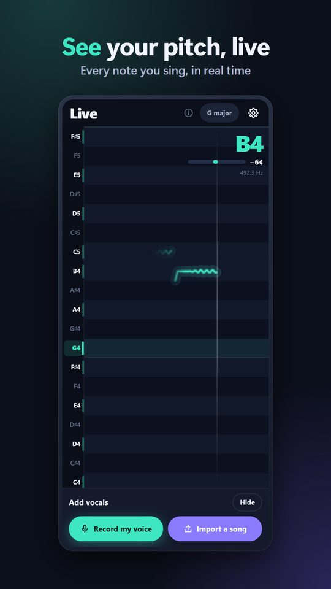
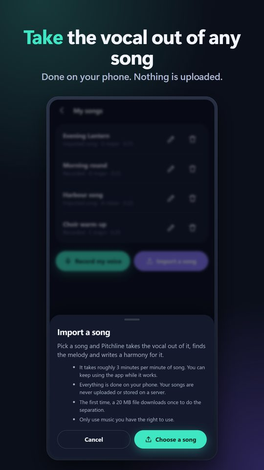
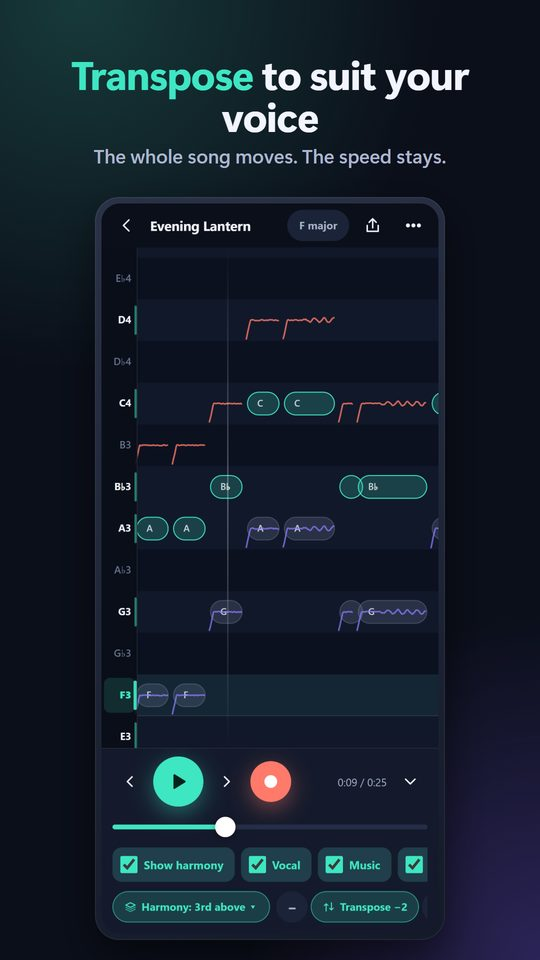

See your voice. Sing in tune, sing the harmony, and sing along with the songs you love. Everything happens on your phone.




Every note you sing draws a glowing line across a keyboard, with the note name and how many cents sharp or flat you are.
Import a song and Pitchline takes the vocal out of it on your phone, then shows the melody as notes you can follow.
A harmony part for any melody: 3rds, 4ths, 5ths, 6ths or octaves, above or below, always in key if you want.
Move the whole song up or down to suit your voice without changing its speed.
Record a melody, or sing along with a song and keep your takes. Hear yourself back with the song.
Export audio (M4A or WAV) or a portrait video of the notes scrolling with the sound.
Large text, high contrast, colour-blind safe colours, screen reader support, left-handed layout and keyboard shortcuts.
No account, no ads, no tracking. Your songs and recordings are never uploaded or stored on a server.